|
Advanced Lighting
The Basic Lighting tutorial covered the lightmap rendering of level
geometry, but there's a lot more related to lighting in Max Payne that you
should be aware of. This article will explain how you can modify the
lightmaps and radiosity settings, how to make the lightmap rendering
process faster, and how the dynamic lighting works in
Max Payne.
Lightmaps
Let us start with a little recap: As you probably have already gathered,
the lightmaps are another texturing layer which is blended
multiplicatively with the actual texturing. The lightmaps are usually much
lower in resolution than the actual texturing and the color and luminance
of lightmaps is calculated with radiosity rendering. Here,
below left, you see rendered lightmaps. For demonstrative purposes this
picture is shown with bi-linear filtering off. Usually the lightmaps are
smoothed with bi-linear and the you see them as seen in the below middle
picture. When combined with higher resolution main texturing you get the
realistic Max Payne lighting (below right).
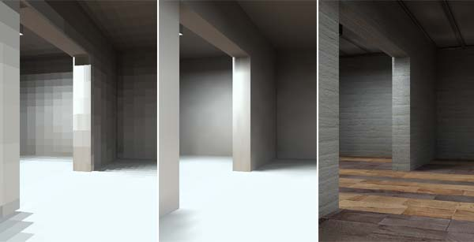
The definite key element with lightmaps is their resolution. The higher their resolution, the better and
sharper the looks, but also the longer the rendering times. The
resolution of a lightmap is given as texels per meter (textured element).
For example, you have a square polygon which is 4 meters by 2 meters in
size, the lightmap resolution of 4 will generate a lightmap on the surface
which is 16 by 8 pixels. If you raise the resolution to, say, 5 texels per
meter, you might still have a lightmap of 8x16 texels. Because of
compatibility reasons, the lightmaps are not scaled linearly. The lightmap
texel size only changes in powers of two giving the lightmaps dimensions
like 2, 4, 8, 16, 32, 64 and 128 (which is the maximum
size). In this example, the next jump in lightmap resolution comes when
you raise the resolution to 8, and this makes the lightmap on the polygon
to be 32x16 texels. This doubles the resolution, but quadruples the amount
of texels, thus making that polygon render four times longer than the one
with the resolution f 4. You should
first aim yourself to get an idea of what kind of results you will get
with different resolutions, and learn right from the start to use
lightmaps smartly, using absolutely as low-res lightmaps all around as
possible and increasing the resolutions only in
those places where you need the accuracy of light and shadow. For
comparison, most of the lightmaps in Max Payne were rendered with
resolutions of 4-6 texels per meter. You can change the lightmap resolution of a single polygon by
activating it (pointing at it) in F6-mode and pressing K. If you want to change the lightmap resolutions for
a whole object or multiple objects, go to F5-mode, select them
(CTRL-A for “All”), switch to F6 mode while the objects are selected, and press
SHIFT-K. The default lightmap resolution for new objects can be found
in the preferences under "Texture mapping" as "Lightmap res
txl/m" which will be used as resolution when new geometry is created. You can also set the lightmap resolution of polygons based on their
orientation. This is done
in F6-mode by pressing the mouse middle button (CTRL-SPACE
for 2-button mouse users) and selecting "Set lmres by normal".
This method too can be applied just to the objects you have selected (again, select them first in F5-mode),
or to the whole level by not selecting anything.
The dialog asks first the resolution for floors, then walls, then ceilings
(The resolution is interpolated for polygons not facing directly upwards,
sideways or downwards). This function is very useful because generally higher resolution
is only needed on the ground/floor and less while moving towards the
ceiling. For Max Payne we generally used values like 4/3/2 or 3/2/1, but
if you don't have multiple PC's to use as a rendering farm, you definitely
want to
use as low lightmap resolutions as you dare. Maybe 3/2/1 for final
renderings, and selectively higher resolutions for there where
specifically needed. In addition to the lightmap resolutions, there are other methods for speeding up the
rendering than just setting lightmap resolutions. Read Selective
Rendering and Radiosity Settings chapters in this article. Large surfaces can easily produce maximum sized (128x128)
lightmaps with high resolution, and these will take very long to render.
So, watch out for these unless you have a rendering farm at your disposal.
A method is provided for you to check that your lightmaps are of
reasonable size, but it is based on coloring the lightmaps to illustrate
their sizes, so unless you want to re-render everything, you should use a
temp-copy of your map for this. Again, you can do this to the whole map or
just a selection. In F6-mode, press the middle mouse button and
select "colorize lightmaps". 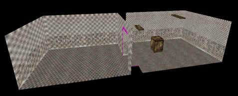 Here
we have a picture of our level, with its lightmap resolutions set by the
polygons' normals. The room on the right has 20/15/10 and the one on the
left 8/4/2. 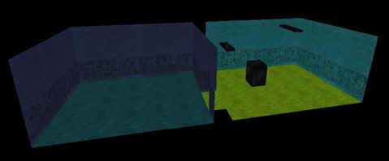 Here
we have the level after colorizing the lightmaps. MaxED
colorizes small, compact lightmaps with darkish blue and huge, over-sized
ones with red. Shades of cyan, green and yellow are in between.
Selective rendering
For furthermore speeding up the rendering process, you can process the
lightmaps to your levels by rendering small portions of it at a time. Or
even one object or one polygon at a time if that is desired. Selective
rendering is especially useful for previewing lights, but you can
also do final renderings like this if you pay some attention to what you
are doing, and fix lightmap problems by hand if some occur.
To render just few objects from the scene, you select the objects in F5-mode,
and press R. To render a single polygon, you point at a polygon in F6-mode
and press R. So it renders the lightmaps only for the selected
objects, but does it take the surrounding objects and light emitters into
account when rendering those lightmaps? For example the lights coming out
from the neighbouring room? Well, you can decide this by the "hide
other objects" tick in the preferences. With this, you can make
MaxED to not take any other objects but the selected ones into account for
the lighting solution. Note that any hidden objects aren't included into
radiosity rendering in any case. Needless to say, rendering single polygons
while "hide other objects" is enabled results into pitch black lightmaps.
General radiosity settings
There are few radiosity-related settings in the MaxED preferences that you
should be aware of and that greatly affect the radiosity rendering quality
and speed.
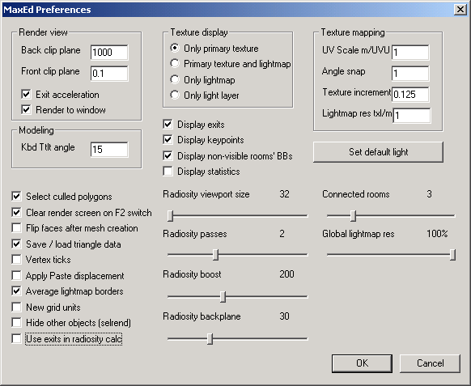
The important settings
regarding radiosity rendering are:
- Radiosity viewport size. You can think of this as how
accurate the eyesight of the rendering process is. Every texel is
rendered so that a "camera" is set on it, and that camera
"looks" into all directions (these are the tiled pictures
that flash in the rendering process window) and based on what it
"sees", it sets the color and brightness of the texel. If you
have a very small viewport size, the pictures that the imaginary
camera takes are very small and only the biggest light sources and
surfaces can be made out of them, i.e. a small light relatively close
to an object might not cast light to it because the camera lighting
the objects surface doesn't "see" the small light. This
value affects only the first pass and possible other passes are always
rendered with minimum sized 32x32. The levels in the game have been
rendered with values between circa 80-150.
- Radiosity passes. In effect, the amount of times the light
bounces. With just one pass, the light is calculated simply from the
source to object surfaces. With two passes, a bounce from those
surfaces is further calculated, etc. The levels in the game have
been rendered with 3 passes.
- Radiosity boost and Intensity (not visible in the window, set per
light source). These two define the brightness of your lights.
Radiosity boost is the brightness that all light sources inherit, and
intensity (default 1.0 = 100%, i.e. full intensity) can be dropped to
tone down individual sources without affecting others. To understand
the purpose, consider this style: keep the radiosity boost high (maybe
as high as 250) so that you are able to cast concrete amounts of light
even with very small light sources, and when doing big light sources,
drop their intensity to avoid having them light up half the level. The
levels in the game have been rendered with values around 200.
- Radiosity backplane. The distance in meters the light remains
strong enough to affect. The levels in the game have been rendered with
maximum value.
- Average lightmap borders. Check this for a moderate speed
boost on rendering. The lightmap borders are then averaged instead of
proper calculation. More speed at the price of quality. If your
geometry is orthogonal you can put this on with practically no quality
loss. Any triangular polygons may produce darkish spots.
- Global lightmap res. Drop this slider to quickly set all
lightmaps down in resolution for the time of one render (after which
the slider is reset). Again, more speed, less quality.
Copy/pasting
lightmaps
This feature can be very useful sometimes. To elaborate, we'll have a go at the wall of our level with the
door and the light above it. In F6-mode, point at the wall to
activate it and press CTRL-C. 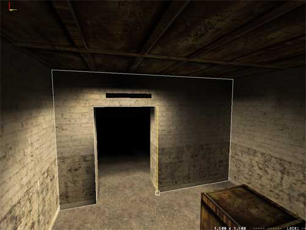 Now
you have the lightmap in the clipboard and you can paste it to any
image-editing software (yes, or to another polygon). Below on the left you
see a magnification of this lightmap. It's tilted and flipped. That
happens and sometimes, in order to paste a lightmap on a polygon, you have
to first flip it around in an image-editing software and re-orient it so
that it comes out right. Since I'm about to just edit this a little and
then paste it back on the same polygon, We won't touch it's orientation.
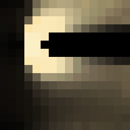 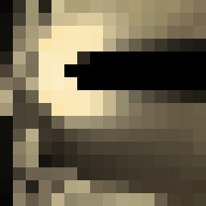
On the right is the same lightmap after a bit of smudging. Again, it has
to be copied from the software, and in F6-mode pasted back to the
polygon. Here's the result: 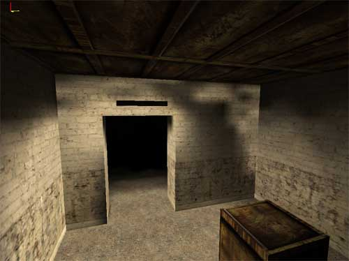 Keep
in mind that if you do this and re-render, regardless of what sized
lightmaps you have pasted where, all polys will be reset to their own
resolution and then rendered, so copy-pasting lightmaps is quite
risk-free, and even recommendable as a way to quickly fix small stuff
without having to render. This obviously also gives you a lot of freedom
to achieve effects that would be very difficult or even impossible to
produce by means of rendering. Another method for manipulating lightmaps
is to add extra light layer into the lightmaps. More info about this in
the Advanced Texturing article.
Dynamic lighting
In addition to the lightmaps, which are of course always static,
there's also a need for dynamic lighting. For example for lighting the
characters, the decals and dynamic objects, or for the lights emitted by
explosions and fires.
The characters are lit by setting up pointlights or spotlights.
The difference between them is that pointlights emit light to all the
directions, and spotlights have a lightcone defined. Neither of them
affects static geometry.
To set up a pointlight, you just create a pointlight entity in F3
mode (Press N and select "pointlight" from the dialog).
You can change the pointlight properties by selecting it and pressing enter.
You are going to need to experiment with the settings for a while to get
them right. As a rule of thumb, you should have a pointlight (or
spotlight) for every light source in the level. Note that pointlights,
like all the dynamic lights, don't get blocked by level geometry, except
the room boundaries (except when the light falloff reaches an exit, then
the pointlight in question will light characters in the other room as
well).
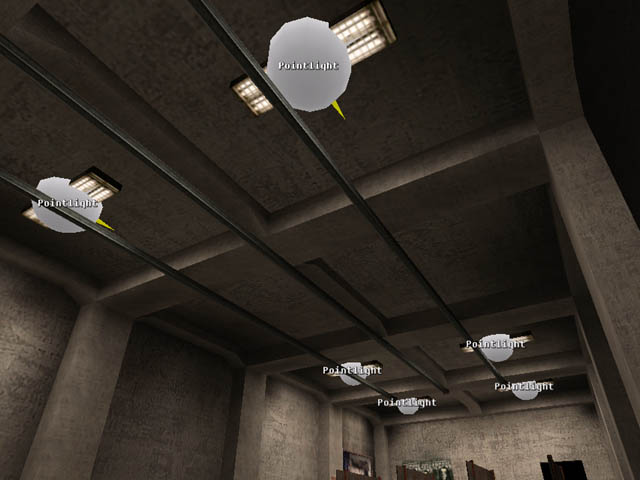
As a general tip, if your lightsources are very high above the floor,
it's usually a good idea to place the pointlights few meters below the
lightsources so that you won't need to make them insanely large.
To create a spotlight, just select an object that has light emitting
surfaces, press enter to get to the properties, and set the
"Export lights" flag on. You can see the spotlights' cones and
falloffs visualized by selecting View > Visualize lights. You
can alter the spotlight properties by pointing at the light-emitting
polygon in F6 mode, pressing middle mouse button and selecting
"Spotlight properties". A serious word of warning though; spotlights
are far more expensive framerate-wise, and it is suggested not to
use them unless it is absolutely required. Just as an example, there is
no single spotlight in use in Max Payne.
NOTE: There's a setting in levels.txt called "AmbientColor",
this is an RBG value defining the level of ambient character lighting.
It is the first setting you should select for your level before starting
to set up dynamic lights. Naturally it should be roughly as low as the
most low-lit parts of your level.
As mentioned before, pointlights and spotlights also affect dynamic
objects if so desired. Normally, if the DO doesn't have lightmaps,
pointlights will affect the DOs dynamically. Below is a picture of two
shooting-range cardboard figures. They are DOs, and positioned
differently in the relation to the pointlight, so you can see how the
pointlight illuminates the cardboard behind it, but not the one in front
of it. If you animate the cardboards, you can see it moving in and out
of the light correctly.
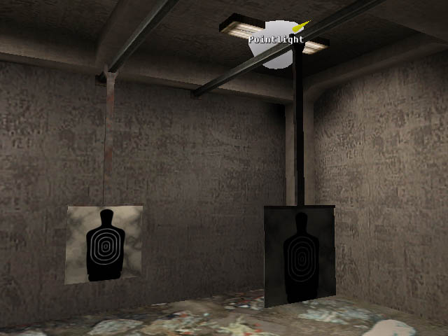 In the object properties for
DOs
there's a flag called "Lightmapped", and if you set it on,
lightmaps will be created on the dynamic object when you do radiosity
rendering. When the DO has lightmaps, it will not get affected by
pointlights, unless you also set the "Pointlights affect" flag
on. But if you do that, you need to modify the lightmaps of the object
to be a lot brighter than they otherwise should be in order to make it
look good. Most DOs in Max Payne were using lightmaps but were not
getting affected by pointlights.
You can also make the dynamically lit objects to appear more round
and smooth by using gourad shading on the desired polygons. This is
applied the same way you turn on lightmap smoothing; by adding a
polygroup and turning on "Smooth lightmaps" for them. If you
turn it on while the polygons don't use lightmaps, it will cause them to
gourad shading instead.
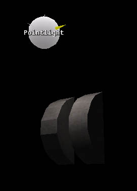
Note however that you have to switch in and out of the
rendering mode (F2) in order for MaxED to visibly switch from flat
shading to gourad shading and vice versa. More about polygroups in the
Advanced Texturing article.
Particle lights
Then there's still particle lights. In short, these are dynamic
lights that affect all the characters and DO's, but also the static
geometry. Most obvious example light emitted from explosions. All the
effects in "particles.txt" that are prefixed with
"Light_" are effects that include only a dynamic light effect.
For more info about how to make your own particle lights, refer to
ParticleFX tutorial.
|